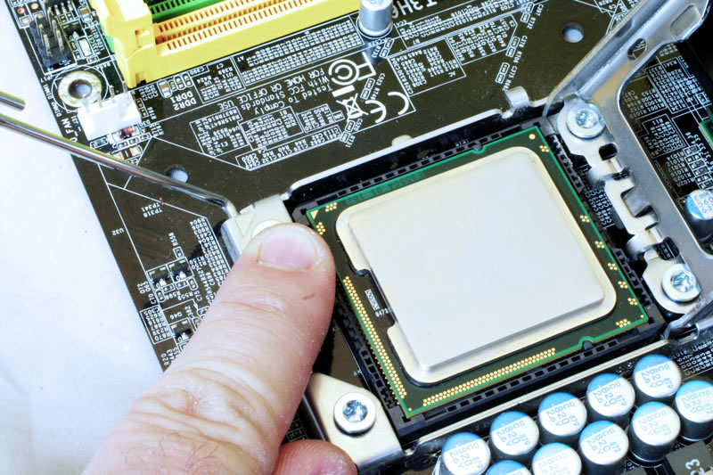
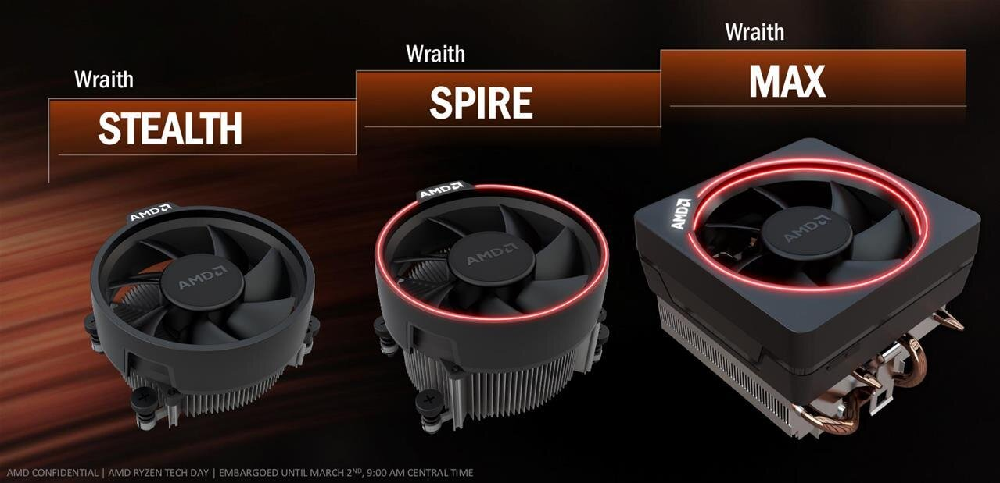
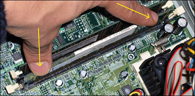
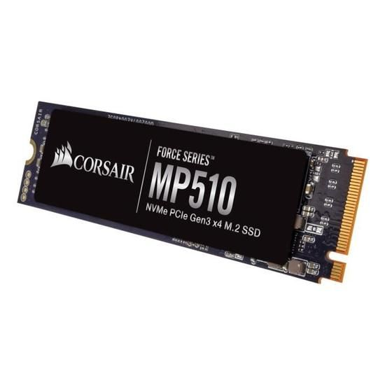
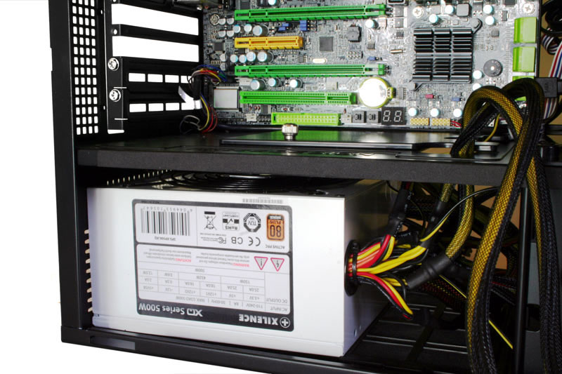

Vous avez choisi vos composants et les avez reçus, il est donc temps de passer à la troisième et dernière étape, c’est-à-dire le montage de votre ordinateur !
Nous allons commencer par votre carte mère, une fois sortie du carton, ne la posez pas directement sur une table ou un support en dur, afin de ne pas l’abîmer. Vous pouvez la déposer sur le carton déplié de votre carte ou celui d’un autre article. Vous pouvez également retirer l’emballage de votre processeur ainsi que celui de vos barattes de RAM.
Pour les personnes ayant choisi un processeur Intel, levez le capot protégeant l’emplacement de celui-ci sur votre carte mère. Faites attentions aux pins de la carte mère, si l’un d’entre eux est cassé, la carte ne fonctionnera pas. Sur le processeur Intel se trouve une flèche, cette flèche doit se trouver dans l’angle inférieur droit de votre socket (emplacement de votre processeur sur la carte). Posez le délicatement sur son emplacement, ne surtout pas forcer. Baissez le Cache puis placez la tige sous le crochet.
Concernant AMD, appliquez les mêmes conseils que pour les processeurs Intel, mais soyez d’avantage vigilant concernant les pins car ils se trouvent cette fois ci sur le processeur directement. Attention à la flèche du processeur devant se trouver dans la partie supérieure gauche de votre carte mère.
Pour en finir avec le processeur, vous allez devoir installer votre système de refroidissement, car un processeur mal refroidit risque de réduire sa durée de vie et de le rendre moins performant. Notez que pour l’achat d’un processeur AMD, un ventirad vous est généralement fourni. Les ventirads constructeurs Intel sont moins performants, plus bruyants et pas toujours fournis. De plus les ventirads AMD contiennent de la pâte thermique, permettant de dissiper correctement la chaleur du processeur. Mais il est préférable d’en acheter en plus et de placer une goutte de pâte au centre du processeur, pas besoin d’en mettre d’avantage. Fixez votre ventirad puis branchez votre câble sur le port ‘CPU FAN’.
Passons maintenant à la RAM, celle si ne doit pas être installer n’importe comment. En effet si vous avez deux barrettes à installer et deux emplacements disponibles, rien de plus simple, cependant si vous avez deux barrettes et quatre emplacements disponibles il va falloir faire attention. En effet sur l’un des côtés de vos emplacements dédiés à la RAM vous devriez voir sur quels emplacements placer vos barrettes. Baissez les loquets, placez vos barrettes en vérifiant bien que les deux blocs sous vos barrettes (la petite partie et la grande partie) soient dans le bon sens, en général la petite partie en dessous. Les loquets doivent se fermer seuls lorsque vos barrettes seront bien positionnées sans avoir à forcer, si ce n’est pas le cas c’est que vous avez dû faire une erreur.
Si vous avez acheté un espace de stockage sous la forme de M.2, c’est-à-dire de barrette, vous allez devoir la fixer dès maintenant sur votre carte. Une fois les étapes précédentes effectuées, vous pouvez désormais placer votre carte mère dans le boitier.
Installez votre bloc d’alimentation dans le compartiment prévu à cet effet grâce aux vis fournies avec le boitier. Isolés chacun de vos câbles pour éviter de vous embrouiller durant le montage. Si vous n’avez pas une alimentation modulaire, c’est-à-dire avec plusieurs câbles fournis avec, il est normal de pas tous les brancher. Pour brancher les câbles de votre alimentation il vous suffira de lire les inscriptions sur ces câbles et les brancher sur les emplacements eux aussi annotés.
Vous avez presque fini ! Si vous en avez une, branchez votre carte graphique ainsi que vos disques durs ou / et disques SSD. Branchez votre carte graphique à votre alimentation, vérifiez que tous les composants soient bien fixés. Vous pouvez refermer votre tour et démarrer votre ordinateur.
C’est donc la dernière des trois parties concernant le montage d’un ordinateur, j’espère qu’elles vous seront utiles et n’hésitez pas à m’envoyer un message sur les points à améliorer, j’en tiendrais compte.